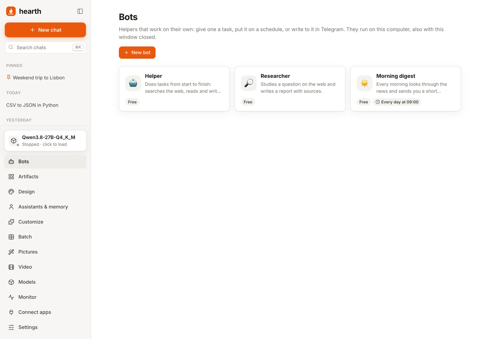
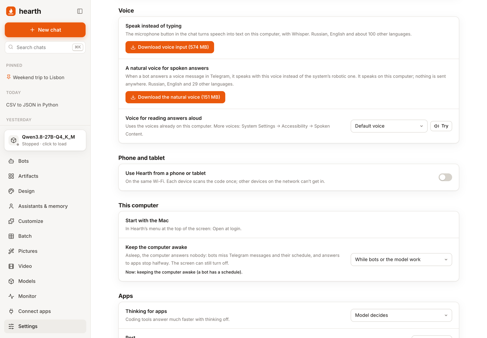

ИИ, который работает на вашем компьютере
Hearth — бесплатная программа для Mac и Windows. Она скачивает открытые модели ИИ и запускает их на вашем компьютере: чат, документы, голос, картинки, видео и боты, которые работают за вас. Без аккаунта, без подписки, без облака.
Для Windows 10 и 11 и для Mac с Apple Silicon. Бесплатно, с открытым кодом · версия 0.2.34.

Всё остаётся у вас
Чаты и файлы лежат в папке на вашем компьютере. Hearth слушает только этот компьютер.
Без аккаунта и подписки
Скачали и пользуетесь. Модели открытые и бесплатные, какие скачать — выбираете вы.
Ваш процессор или видеокарта
Hearth проверяет компьютер и отмечает модели, которые будут на нём хорошо работать.
Что умеет
Подскажет, какая модель подойдёт
Откройте «Модели»: Hearth покажет процессор, память и видеокарту и отметит размеры, которые работают хорошо. Модели, которые уже есть в LM Studio или Ollama, он найдёт и возьмёт как есть.

Боты, которые работают сами
Дайте боту задачу или расписание и пишите ему с телефона через его собственный бот в Telegram, текстом или голосом. Он читает присланные файлы и присылает в ответ документы и таблицы.

Говорите вместо набора
Задайте вопрос голосом или ведите голосом весь разговор. Речь распознаётся на вашем компьютере, а ответы можно слушать живым голосом.

Подключите свои сервисы
Коннекторы, навыки и плагины в форматах Claude, с каталогом примерно из 60 сервисов. Каждый коннектор выключен, пока вы его не включите.

И с телефона
Отсканируйте QR-код на экране компьютера и пользуйтесь всей программой с телефона или планшета в той же сети Wi-Fi. Модель при этом работает на компьютере.

И ещё
Чат с документами
Текст, картинки, PDF, Word, Excel и PowerPoint. Поиск по всем чатам, ветки разговора, закрепление и архив.
Сама ищет ответ
Модель ищет в интернете, открывает страницы и читает папки, которые вы разрешили. Каждый шаг виден в чате.
Картинки и видео
Рисует картинки и делает короткие ролики со звуком на вашей видеокарте.
Дизайн и мини-приложения
Афиши, посты для соцсетей, логотипы и небольшие веб-приложения, которые пишет модель, с живым предпросмотром.
Сотни файлов за раз
Одна инструкция для папки с фото или документами, результат — таблица Excel.
Модель для других программ
Локальный API в форматах OpenAI и Anthropic: для инструментов программиста и всего, что умеет с ними работать.
Скачать Hearth
Бесплатно. Node.js уже внутри пакетов, больше ничего ставить не нужно. версия 0.2.34
Windows 10 или 11
Установщик · 24 МБ
Запустите его. Права администратора не нужны. Появятся ярлыки в меню «Пуск» и на рабочем столе.
СкачатьWindows, без установки
Архив zip · 35 МБ
Распакуйте куда угодно и дважды щёлкните Hearth.vbs.
СкачатьLinux или Mac с процессором Intel? Hearth запускается из исходного кода: как запустить.
При первом запуске появится предупреждение
Пакеты пока не подписаны, поэтому система спрашивает, открывать ли их.
- Windows: «Система Windows защитила ваш компьютер» → Подробнее → Выполнить в любом случае.
- Mac: «Системные настройки» → «Конфиденциальность и безопасность» → Всё равно открыть рядом с Hearth.
Первые шаги
- Откройте «Модели». Hearth покажет процессор, память и видеокарту.
- Нажмите «Скачать движок», если карточка «Движок» об этом просит. Hearth сам выберет сборку для вашего компьютера.
- Выберите модель с пометкой «Работает хорошо» и скачайте её.
- Нажмите «Загрузить» и начинайте разговор.
Что нужно компьютеру
- Память: на 16 ГБ хорошо работают небольшие модели, на 32 ГБ и больше — сильные. Видеокарта с 8 ГБ и больше всё ускоряет, но она не обязательна.
- Диск: модель занимает от 4 до 80 ГБ. Для картинок нужно ещё около 11 ГБ, для видео — около 25 ГБ.
- В самом Hearth нет ни моделей, ни движка. Он скачивает то, что выбрали вы, когда вы нажимаете «Скачать».
Приватность
- Hearth работает на вашем компьютере и слушает только его. Чаты и файлы остаются в вашей папке данных.
- Никуда ничего не отправляется, пока вы не воспользуетесь тем, чему нужен интернет: поиском в сети, открытием страницы, включённым коннектором или подключённым ботом в Telegram.
- Веб-инструменты открывают только общедоступные адреса и никогда — ваш компьютер или домашнюю сеть. Боты пишут только в свою рабочую папку.
- Всё, что Hearth скачивает для запуска, берётся из официальных выпусков авторов и сначала сверяется с контрольной суммой.